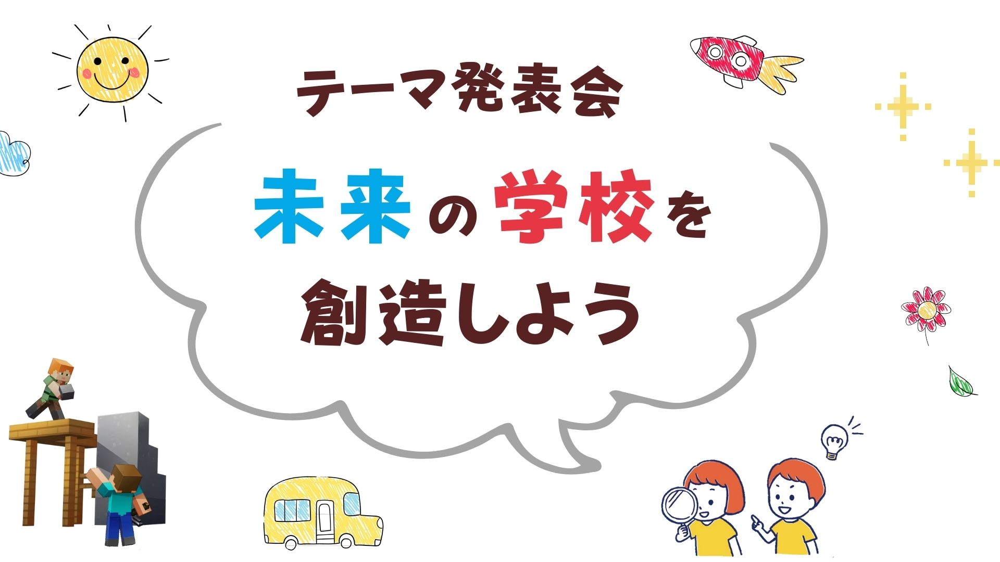
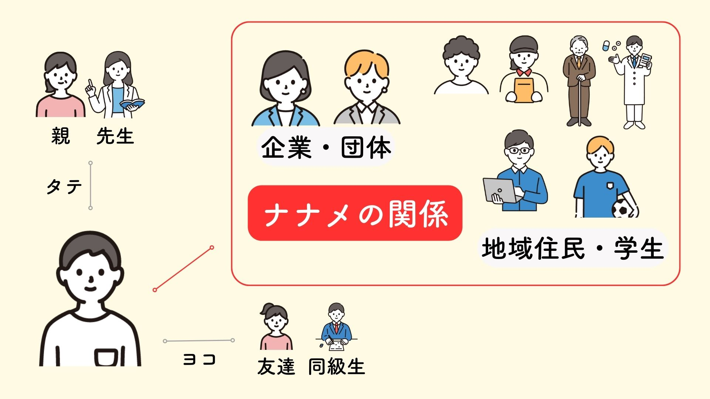

ミライクラフト（実践プログラム）
身に付けた力を試し、仲間と協働！
学びで得た知識やスキルを、実際の活動に移すステージ。仲間とチームを組み、自分の「好き」や「得意」を活かしてイベント企画、地域課題解決、商品制作などに挑戦します。
失敗も含めて経験を積み重ねることで、「自分だからできること」に気づく。
発表会：「つくる → つたえる → つたわる」までが学び

イベント企画：「どんなワクワクを届ける？」から考え、チームで商品サービス制作

地域課題解決：「今の社会の課題は？」から“自分にできること”へ

今後実施予定
地域と連携した実践
自治体・企業・団体と協働し、実社会で試すプロジェクト。
コースとの接続

失敗は本当に悪いこと？
「失敗したらどう思われるだろう？」「一度失敗したら次はないかもしれない」「立ち直れる自信がない・・・」 そういった「失敗＝悪」という考えを、私たちは払拭したいと考えております。 「失敗はつらい。でもやらない後悔はもっとつらい。」心の底では誰もがそう感じているのではないでしょうか。
実際、コーネル大学の心理学者トーマス・ギロヴィッチの研究で、「行動による後悔」よりも「行動しなかったことによる後悔」の方が大きいと示されています。これは「感情の持続性」が関係しているとされています。 行動による後悔は、時間とともに薄れていく傾向がある一方で、行動しなかったことによる後悔は心に長く残りやすい。「もしあの時やっていたら…」という思いが、いつまでも残りやすいからです。
それでも「やめといた方がいいよ」とつい言ってしまう
自分の失敗経験や一般的なケースにあてはめて、良かれと思ってアドバイスをしてしまうことがありますよね。 「子どもには同じ経験をさせたくない」「できるだけ失敗は避けてほしい」・・これは思いやりでありつつ、お節介なのかもしれません。
子どもにとっては、多くのことが新たなチャレンジであり、挑戦そのものが大きな学びになるでしょう。時代が変われば、昔の経験が通用しないことも多々あります。 「それは危ないよ」「失敗したらどうするの？」という声が、チャレンジの機会を奪い、成長を阻んでいるかもしれません。
挑戦と失敗がつくる「学習経験」
「学習経験」という言葉があります。自分がやってみて得られた経験のことです。勉強や読書のインプットだけでなく、実際に体験しながら学び、時には失敗し、そこから得た気づきや学びが深く記憶に残るという意味です。 たとえば、初めて自転車に乗れたときを思い出してください。最初はうまくバランスをとれず、失敗して転んでしまったと思います。「こうやってハンドルを持って、ペダルをこぐんだよ」と教えられても、実際に自転車に乗ると思うようにいかない。でも、その「転んだ経験」から、次はどうやったらバランスが取れるか体で覚え、少しずつ乗れるようになっていきます。
このように、たとえ失敗しても、それを繰り返しながら少しずつ自信をつけ、最終的には自分の力でできるようになるプロセスこそが「学習経験」です。失敗も含めた学習経験は、感情とともに自分自身を成長させる大きな学びの機会です。 一方で、失敗を恐れ挑戦しないでいると、どうしても安全な体験しか得られなくなります。そうなると、困難な問題に自分の力で立ち向かい、解決できたという経験が少なくなってしまいます。
自己肯定感・自己有用感が低い国、ニッポン。
自分の力で何かを解決した経験が乏しい。また、自分の可能性を信じることができない。 こうした背景が、日本の若者の自己肯定感や自己有用感の低さにつながっているのかもしれません。内閣府が実施した「我が国と諸外国のこどもと若者の意識に関する調査（2023年度）」では、13～29歳の日本の若者の回答は以下の通りでした。
私は、自分自身に満足している(57.4%)
自分には長所があると感じている(65.6%)
今の自分が好きだ(53.4%)
この結果は調査対象国の中で最下位。諸外国と比べ日本は自己肯定感、自己有用感が低くなっています。 私たちは、この原因のひとつに「正解主義の教育」があると考えています。現在は情報があふれ、何が正解かわからない時代です。それでも学校教育においては「正解を暗記し、偏差値の高さで競う」のがまだまだ主流。 このスタイルが、子どもたちの自己肯定感や自己有用感を損なうだけでなく、不登校の増加にも影響を与えているのではないでしょうか。 2022年度の不登校の児童生徒数は299,048人にのぼります。この数は年々増加し、過去10年で2倍にまでなっています。（参考：文部科学省 児童生徒の問題行動・不登校等生徒指導上の諸課題に関する調査）
このような場面で必要とされるのが、「失敗を含めた学習経験」です。挑戦を恐れ、他の人と同じような経験ばかりを積んでしまうと、「自分とは何か」という問いに答えることが難しくなってしまいます。自ら経験し、失敗も乗り越えることで、自分らしさが見つかるのだと思います。
失敗OK！自分が学んだことを試し、自分ならではの経験をつくるコミュニティ
学校には、教育や社会性、子どもの発達をサポートする場としての機能があります。しかし、学んだことを実際に試し、経験を積む「実践の場」としての機能は少ないと思っています。
現在は情報があふれ、変化が激しい社会です。かつての正解らしきものも問い直され、見直されている世の中において、学んだことをすぐに試し、失敗しても改善策を見つけて動き続けることが大切だと私たちは考えています。
CLAFTは、子どもたちが自ら課題を設定し、その解決策を個人やチームで考え、すぐに試せる場を提供していきます。自らアイデアを持ち寄って、それを形にしていく過程で、自分にしかない経験を積み重ね、自信を育むことができると考えています。
また、CLAFTは同じ志を持った仲間が集まるコミュニティでもあります。今の子どもたちの活動範囲は、主に家庭と学校が中心です。それでは社会を知るきっかけが不足しているように思います。 評価の基準も限られていて、多様な個性や才能が十分に活かされにくいのが現状です。だからこそ、私たちは「ナナメの関係」が大切だと考えます。
企業や団体、地域住民、習い事や教室など、いわゆる「弱いつながり」を持つことです。親や先生とのタテ関係、兄妹や友達とのヨコ関係にはないコミュニケーションや関わり合いが生まれることで、子どもたちが世の中を知る貴重な機会になると思っています。 あなたもぜひ、私たちと一緒に「ナナメの関係」を築きながら、子どもたちの活動をサポートしていきませんか？